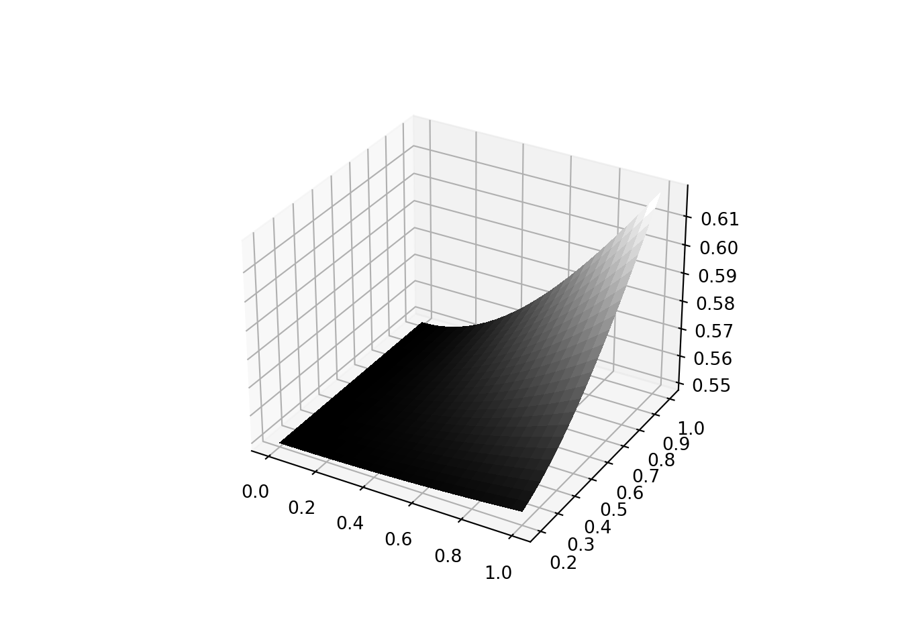
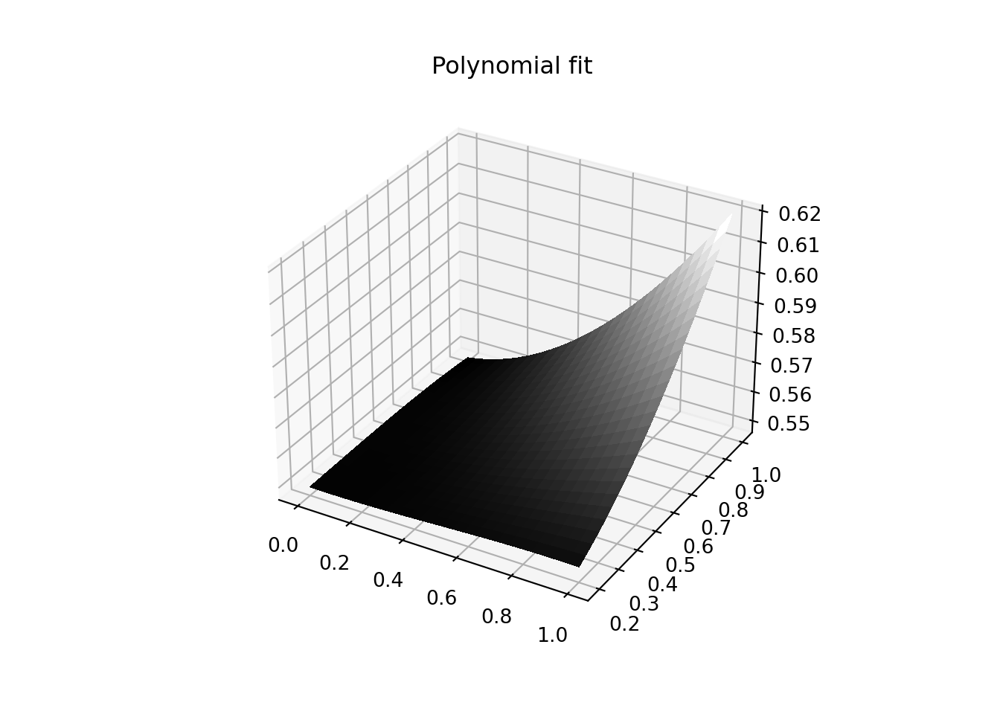
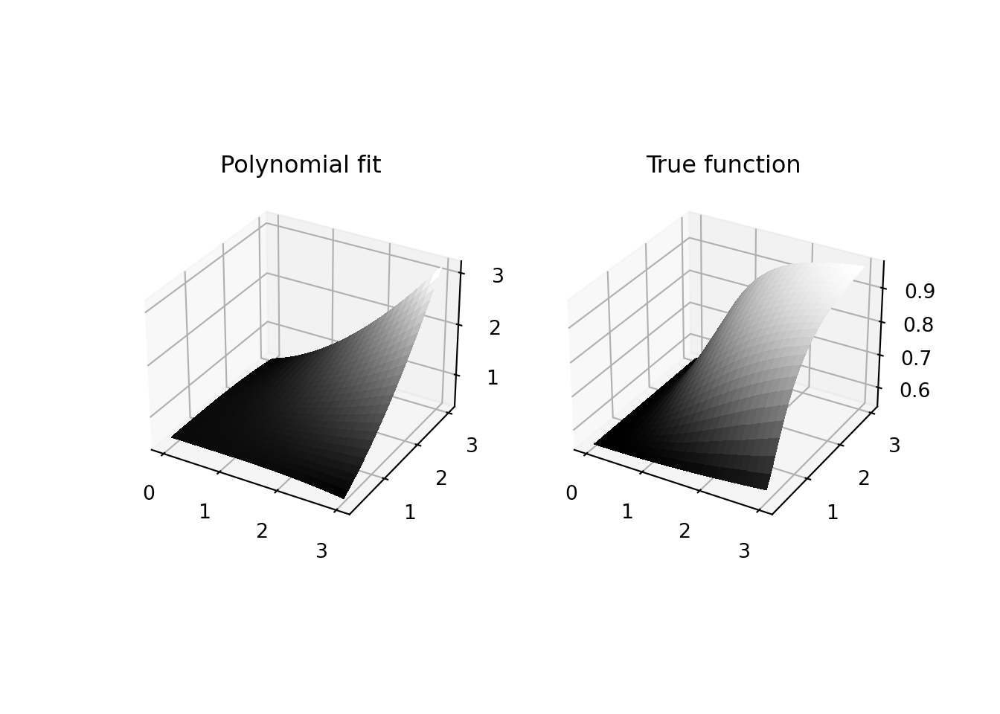
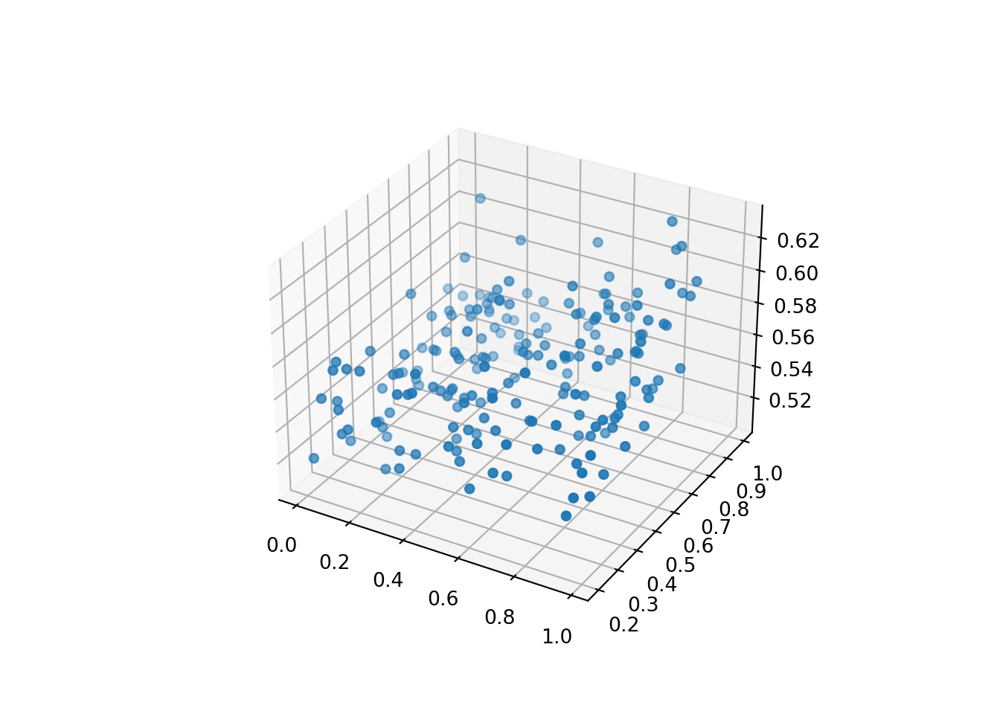
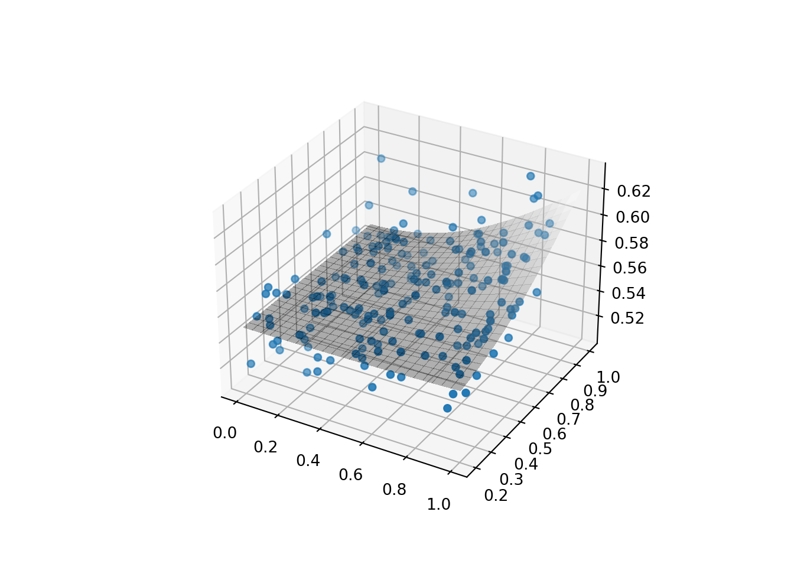

This is going to be a short post trying to demonstrate what our goal is when doing predictive modelling. It can feel quite daunting when first starting to think about these concepts, but really it is conceptually quite simple. The world generate data all the time, people are born at different lengths and sizes, the weather changes from day to day, planets and stars are discovered and so on. Exactly how these data are generated is, however, seldom known. That is, we rarely know the exact functional form of the data generating process. Predictive modelling is nothing other than trying to find the function that has generated the data, that’s it.
Of course, this endeavour is not always easy. However, the concept of what we are trying to do as scientist (even if you don’t do predictive modelling) became much more clear to me when I realised that most mathematical models used in statistics are just ways to imitate data generating processes in the real world. And when we fit models to data we are just trying to find the best possible guess of what the function that has generated these data might look like. See for example the following code:
import pandas as pd
import numpy as np
def gen_fun(x, c, d):
x1 = x[0]; x2 = x[1];
c1 = c[0]; c2 = c[1]; d1 = d[0]; d2 = d[1];
y = np.exp(-c1/(1+d1*(x1**2)*(x2**2)) -c2/(1+d2*(x1**2)*(x2**2)))
return yThis defines a function \[ y = exp\left(-\frac{c_1}{1+d_1x_1^2x_2^2}-\frac{c_1}{1+d_1x_1^2/x_2^2} \right) \] taking two arguments \(x_1\) and \(x_2\), as well as four parameters \(c_1, \ c_2, \ d_1\) and \(d_2\). Given a set of parameters and some ranges for the arguments, we can plot this surface as a function of \(x_1\) and \(x_2\). Let’s define a grid over \([0, 1]\times[0.2, 1]\) and plot the surface with parameters \(d_1 = 0.2, \ d_2 = 0.6, \ c_1 = 0.5, \ c_2 = 0.1\):
import matplotlib.pyplot as plt
xlist = np.linspace(0, 1, 25)
ylist = np.linspace(0.2, 1, 25)
X, Y = np.meshgrid(xlist, ylist)
y = gen_fun([X, Y], d = [0.2, 0.6], c = [0.5, 0.1])
fig = plt.figure()
ax = plt.axes(projection = '3d')
surf1 = ax.plot_surface(X, Y, y, rstride=1, cstride=1,
cmap='gray',linewidth=0, antialiased=False)
plt.show( ) 
Say that we have observed this data in the world, but don’t know how it has been generated. What type of data generating process would be our best guess here? It is evident that this surface isn’t linear and there are several ways to model it, but a polynomial regression would probably perform fairly well.
from sklearn.preprocessing import PolynomialFeatures
from sklearn.linear_model import LinearRegression
poly_features = PolynomialFeatures(degree=3, include_bias=False)
grid_df = pd.DataFrame([X.reshape(25*25), Y.reshape(25*25)]).T
X_poly = poly_features.fit_transform(grid_df)
lin_reg = LinearRegression()
lin_reg.fit(X_poly, y.reshape(25*25));
y_hat = lin_reg.predict(X_poly)
y_hat_mat = y_hat.reshape(25, 25)
fig = plt.figure()
ax = plt.axes(projection = '3d')
surf1 = ax.plot_surface(X, Y, y_hat_mat, rstride=1, cstride=1,
cmap='gray',linewidth=0, antialiased=False)
plt.title("Polynomial fit")
plt.show( ) 
As can be seen, this looks almost identical to the true function, so we can be fairly confident of our model choice. However, in reality the polynomial regression was not the true data generating process which becomes apparent if we try to extrapolate the model to values of \(x_1\) and \(x_2\) outside of the grid \([0, 1]\times[0.2, 1]\) that we previously defined, for example \([0, 3]\times[0.2, 3]\):
xlist = np.linspace(0, 3, 25)
ylist = np.linspace(0.2, 3, 25)
X, Y = np.meshgrid(xlist, ylist)
grid_df = pd.DataFrame([X.reshape(25*25), Y.reshape(25*25)]).T
X_poly = PolynomialFeatures(degree=3, include_bias=False).fit_transform(grid_df)
y_hat = lin_reg.predict(X_poly)
y_hat_mat = y_hat.reshape(25, 25)
fig = plt.figure()
ax = plt.subplot(121, projection = '3d')
surf1 = ax.plot_surface(X, Y, y_hat_mat, rstride=1, cstride=1,
cmap='gray',linewidth=0, antialiased=False)
plt.title("Polynomial fit")
true_ = gen_fun([X, Y], d = [0.2, 0.6], c = [0.5, 0.1])
ax = plt.subplot(122, projection = '3d')
surf2 = ax.plot_surface(X, Y, true_, rstride=1, cstride=1,
cmap='gray',linewidth=0, antialiased=False)
plt.title("True function")
plt.show( ) 
These are obviously not the same functions, the polynomial fit just extends the same shape of the surface from the \([0, 1]\times[0.2, 1]\) grid, while the surface from the true data generating process takes on a completely different shape for higher values of \(x_1\) and \(x_2\). This emphasises the importance of never extrapolating outside of the ranges of the training data, because when we are doing predictive modelling we are only (most often) simulating the data generating process, something we can only do for data that we have observed.
In the real world data is going to be a lot more noisy than demonstrated here. Let us for example generate a few observations, say 200, and add some Gaussian noise to the data generated from our function with the same parameters as before:
np.random.seed(42)
X = [np.random.uniform(0, 1, 200), np.random.uniform(0.2, 1, 200)]
y = gen_fun(X, d = [0.2, 0.6], c = [0.5, 0.1]) + np.random.normal(0, 0.02, 200)
fig = plt.figure()
ax = fig.add_subplot(projection='3d')
ax.scatter(X[0], X[1], y)
plt.show()
Say that we have on good authority what the data generating process is, but we don’t know the parameters of the function. We can try to find them by defining a loss function, i.e. a function that calculates some form of model error and try various parameters until we think that error is as low as it can get. This is in essence what we are doing when training a model of any kind.
def gen_fun_mse(theta, x, y):
d = [theta[0], theta[1]]
c = [theta[2], theta[3]]
y_hat = gen_fun(x, d = d, c = c)
mse = sum(((y_hat - y)**2))/len(y_hat)
return mse
theta = [0.5, 0.5, 0.5, 0.5] # Guess 1
gen_fun_mse(theta, X, y)## 0.029273615115557573theta = [0.1, 1.5, 0.0, 0.9] # Guess 2
gen_fun_mse(theta, X, y)## 0.01213406201171027theta = [0.2, 0.6, 0.5, 0.1] # True parameters
gen_fun_mse(theta, X, y)## 0.0003883500216119719This search is of course tedious work to do manually, but fortunately
it is possible to automate. I will go into more detail of these procedures
in future posts, but to keep this post short I will simply use a predefined
optimisation routine from scipy called
BFGS.
To initialise the search we start with some uniform random values on \([0,2]\).
from scipy.optimize import minimize
theta0 = np.random.uniform(0, 2, 4)
best_params = minimize(gen_fun_mse, theta0, args = (X, y))
best_params.x## array([ 0.28632496, 2.21745009, 0.62274297, -0.02452637])gen_fun_mse(best_params.x, X, y)## 0.00038746162301986033These are not at all the original parameters! However, the MSE is even lower for these parameters than for the true. What I am trying to demonstrate with this is that even though we knew the functional form of the data generating process we are still just doing function approximation when we are training algorithms like this. The power of function approximation is however daunting, as is evident from the massive use of deep neural nets we have seen the past decade. Because that is just what they neural networks are, universal function approximations of data generating processes. Incredible, isn’t it?
xlist = np.linspace(0, 1, 25)
ylist = np.linspace(0.2, 1, 25)
X_, Y_ = np.meshgrid(xlist, ylist)
y_pred = gen_fun([X_, Y_], d = best_params.x[:2], c = best_params.x[2:])
fig = plt.figure()
ax = plt.axes(projection = '3d')
scat = ax.scatter(X[0], X[1], y)
surf1 = ax.plot_surface(X_, Y_, y_pred, alpha=0.3, rstride=1, cstride=1,
cmap='gray',linewidth=0, antialiased=False)
plt.show( ) 